Latest full-dataset recheck: all cases together, source toggles and current inventory
Flatmap tracing reviewContour precision audit: source toggles and field enlargement
Flatmap tracing review
Source image, saved anatomical outlines and scale endpoints. Unfinished fields are NA.
fig01_summary — illustrative summary
Reassessed from the full source page; cortical inset crop and each field perimeter reviewed separately.
ImageJ ROIs · Calibrated TIFF
| Field | mm² | % neocortex | Status |
|---|
| M | 12.418 | NA | provisional; anatomical review required |
| DM | 26.916 | NA | provisional; anatomical review required |
| MT | 11.658 | NA | provisional; anatomical review required |
| 3b | 48.870 | NA | provisional; anatomical review required |
| 3a | 16.166 | NA | provisional; anatomical review required |
| MI | 28.402 | NA | provisional; anatomical review required |
| SMA | 15.374 | NA | provisional; anatomical review required |
| SII | 11.266 | NA | provisional; anatomical review required |
| PV | 11.295 | NA | provisional; anatomical review required |
| VS | 13.833 | NA | provisional; anatomical review required |
| FEF | 5.571 | NA | provisional; anatomical review required |
| FV | 5.018 | NA | provisional; anatomical review required |
| AI + R | 19.082 | NA | provisional; anatomical review required |
| MST | 11.840 | NA | provisional; anatomical review required |
| FST | 19.767 | NA | provisional; anatomical review required |
| ITc | 49.426 | NA | provisional; anatomical review required |
| VP + VA | 31.078 | NA | provisional; anatomical review required |
| DLr | 16.269 | NA | provisional; anatomical review required |
| DI | 11.124 | NA | provisional; anatomical review required |
| DLc | 15.967 | NA | provisional; anatomical review required |
| 1 | 17.727 | NA | provisional; anatomical review required |
| VPP | 19.219 | NA | provisional; anatomical review required |
| 17 | NA | NA | not_measurable |
| 18 | NA | NA | not_measurable |
| ITr | NA | NA | not_measurable |
| PP | NA | NA | not_measurable |
| 2 | NA | NA | not_measurable |
fig02A_cortex — owl monkey; figure 2, identity unreported
Reassessed from the full source page; cortical inset crop and each field perimeter reviewed separately.
ImageJ ROIs · Calibrated TIFF
| Field | mm² | % neocortex | Status |
|---|
| DM | NA | NA | provisional; anatomical review required |
| M | NA | NA | not_measurable |
fig02B_cortex — owl monkey; figure 2, identity unreported
Reassessed from the full source page; cortical inset crop and each field perimeter reviewed separately.
ImageJ ROIs · Calibrated TIFF
| Field | mm² | % neocortex | Status |
|---|
| DM | 22.401 | NA | provisional; anatomical review required |
| M | NA | NA | not_measurable |
fig02C_cortex — owl monkey; figure 2, identity unreported
Reassessed from the full source page; cortical inset crop and each field perimeter reviewed separately.
ImageJ ROIs · Calibrated TIFF
| Field | mm² | % neocortex | Status |
|---|
| DM | NA | NA | provisional; anatomical review required |
| M | NA | NA | not_measurable |
fig03 — 89-35
Provisional image digitization. Inspect field boundaries and short scale bar; no shrinkage correction.
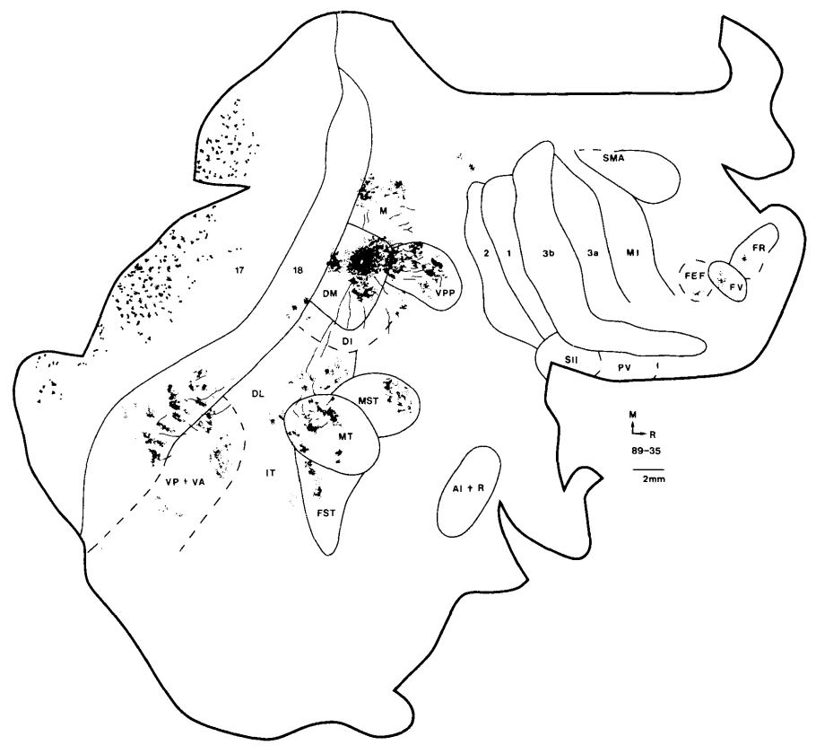

ImageJ ROIs · Calibrated TIFF
| Field | mm² | % neocortex | Status |
|---|
| Drawn tissue outline | 1326.509 | NA | provisional; anatomical review required |
| MT | 20.646 | NA | provisional; anatomical review required |
| MST | 12.447 | NA | provisional; anatomical review required |
| FST | 12.557 | NA | provisional; anatomical review required |
| FV | 3.873 | NA | provisional; anatomical review required |
| 1 | 14.954 | NA | provisional; anatomical review required |
| 2 | 15.181 | NA | provisional; anatomical review required |
| 3b | 42.495 | NA | provisional; anatomical review required |
| DM | 20.124 | NA | provisional; anatomical review required |
| VPP | 13.821 | NA | provisional; anatomical review required |
| 17 | 203.283 | NA | provisional; anatomical review required |
| SMA | 13.604 | NA | provisional; anatomical review required |
| AI + R | 13.124 | NA | provisional; anatomical review required |
| 18 | NA | NA | not_measurable |
| M | NA | NA | not_measurable |
| DI | NA | NA | not_measurable |
| DL | NA | NA | not_measurable |
| VP + VA | NA | NA | not_measurable |
| IT | NA | NA | not_measurable |
| FEF | NA | NA | not_measurable |
| 3a | NA | NA | not_measurable |
| MI | NA | NA | not_measurable |
| SII | NA | NA | not_measurable |
| PV | NA | NA | not_measurable |
| FR | NA | NA | not_measurable |
fig05 — 88-32
First-run pilot: whole outline plus MT, FST and AI + R. Remaining fields are NA. Anatomical review is pending; this is not a completed paper.
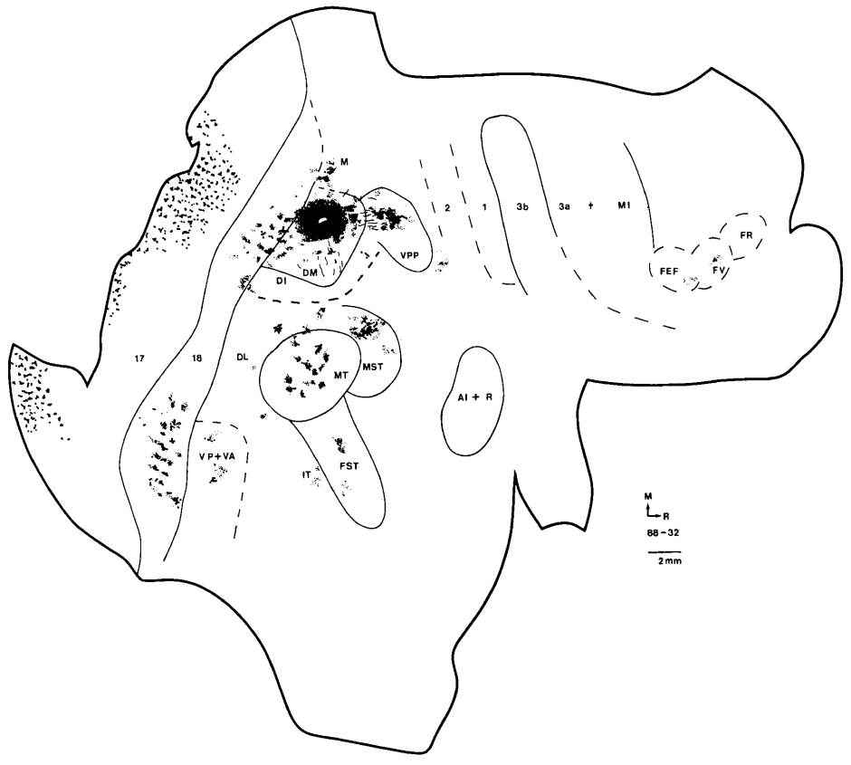
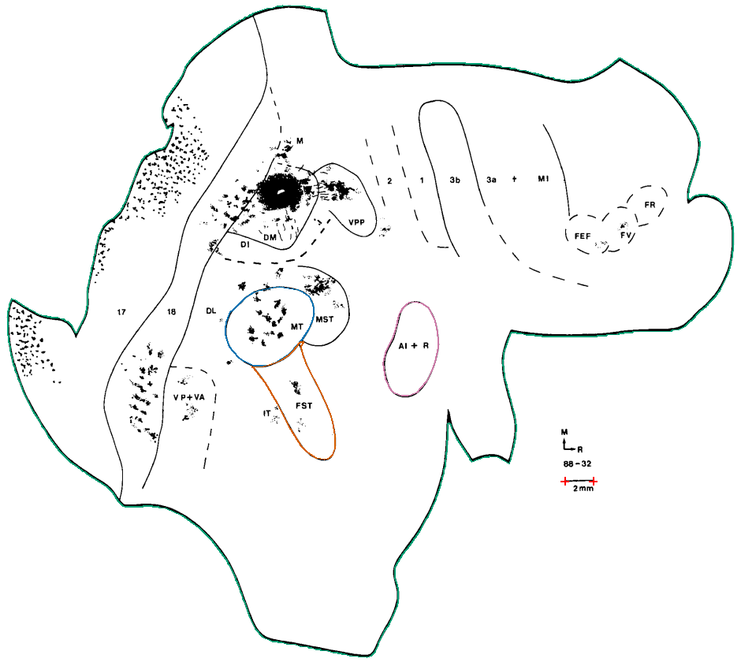
ImageJ ROIs · Calibrated TIFF
| Field | mm² | % neocortex | Status |
|---|
| Neocortex outline | 1304.031 | 100.000 | provisional; anatomical review required |
| MT | 26.092 | 2.001 | provisional; anatomical review required |
| FST | 22.106 | 1.695 | provisional; anatomical review required |
| AI + R | 18.460 | 1.416 | provisional; anatomical review required |
| 17 | NA | NA | not_yet_digitized |
| 18 | NA | NA | not_yet_digitized |
| DL | NA | NA | not_yet_digitized |
| DM | NA | NA | not_yet_digitized |
| DI | NA | NA | not_yet_digitized |
| M | NA | NA | not_yet_digitized |
| VPP | NA | NA | not_yet_digitized |
| 2 | NA | NA | not_yet_digitized |
| 1 | NA | NA | not_yet_digitized |
| 3b | NA | NA | not_yet_digitized |
| 3a | NA | NA | not_yet_digitized |
| MI | NA | NA | not_yet_digitized |
| FEF | NA | NA | not_yet_digitized |
| FV | NA | NA | not_yet_digitized |
| FR | NA | NA | not_yet_digitized |
| IT | NA | NA | not_yet_digitized |
| VP + VA | NA | NA | not_yet_digitized |
| MST | NA | NA | not_measurable |
fig06 — 89-58
Provisional image digitization. Inspect field boundaries and short scale bar; no shrinkage correction.
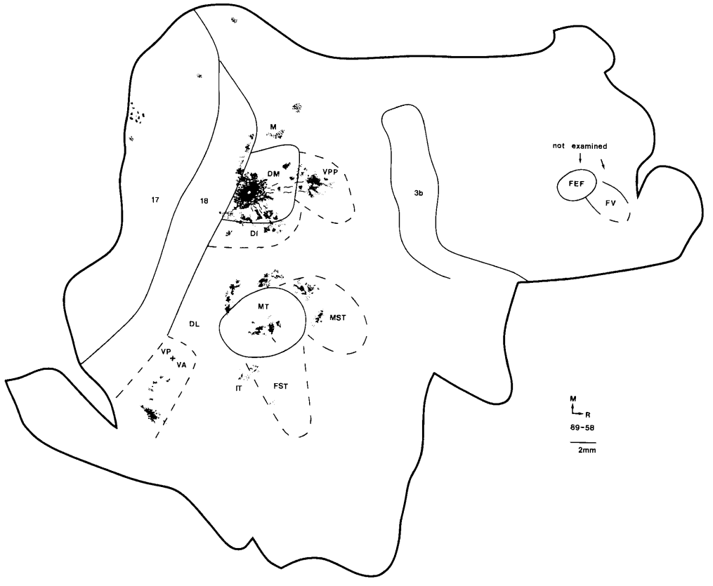
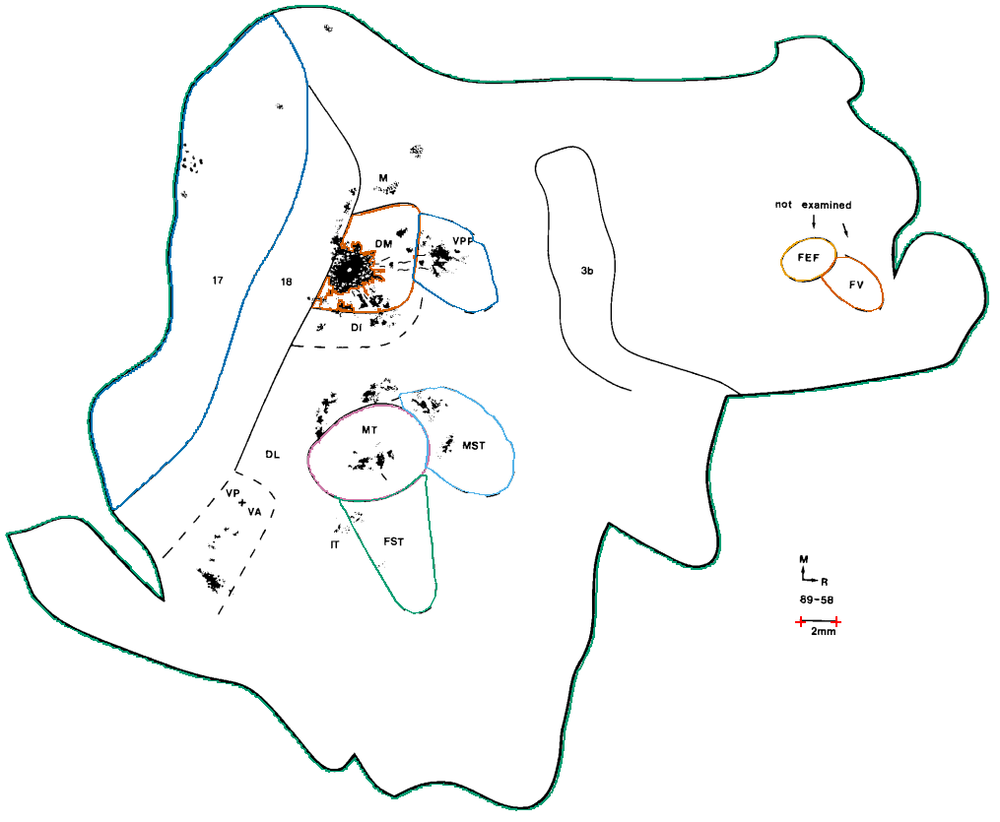
ImageJ ROIs · Calibrated TIFF
| Field | mm² | % neocortex | Status |
|---|
| Neocortex outline | 1431.123 | 100.000 | provisional; anatomical review required |
| 17 | 140.038 | 9.785 | provisional; anatomical review required |
| DM | 20.257 | 1.415 | provisional; anatomical review required |
| MT | 27.896 | 1.949 | provisional; anatomical review required |
| FEF | 5.685 | 0.397 | provisional; anatomical review required |
| MST | 24.768 | 1.731 | provisional; anatomical review required |
| FST | 23.685 | 1.655 | provisional; anatomical review required |
| VPP | 18.188 | 1.271 | provisional; anatomical review required |
| FV | 6.932 | 0.484 | provisional; anatomical review required |
| 18 | NA | NA | not_measurable |
| M | NA | NA | not_measurable |
| DI | NA | NA | not_measurable |
| DL | NA | NA | not_measurable |
| VP + VA | NA | NA | not_measurable |
| IT | NA | NA | not_measurable |
| 3b | NA | NA | not_measurable |
fig11A — 89-35
Provisional image digitization. Inspect field boundaries and short scale bar; no shrinkage correction.
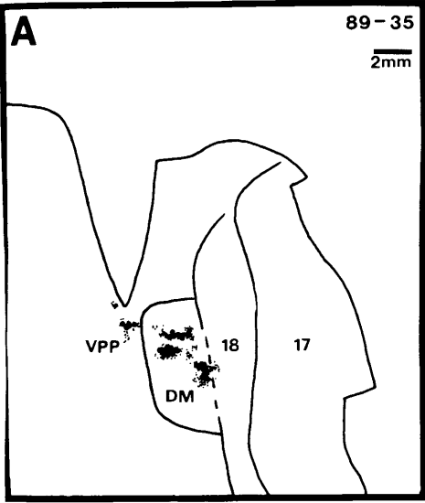
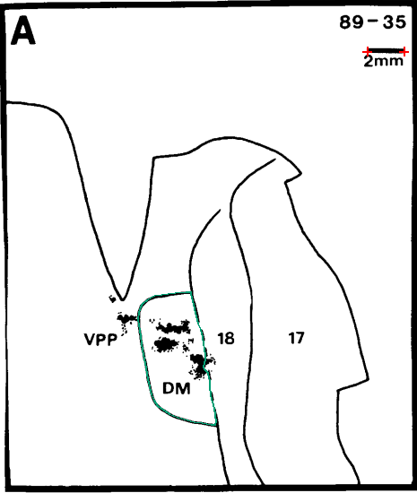
ImageJ ROIs · Calibrated TIFF
| Field | mm² | % neocortex | Status |
|---|
| DM | 21.672 | NA | provisional; anatomical review required |
| 17 | NA | NA | not_measurable |
| 18 | NA | NA | not_measurable |
| VPP | NA | NA | not_measurable |
fig11B — 88-32
Provisional image digitization. Inspect field boundaries and short scale bar; no shrinkage correction.
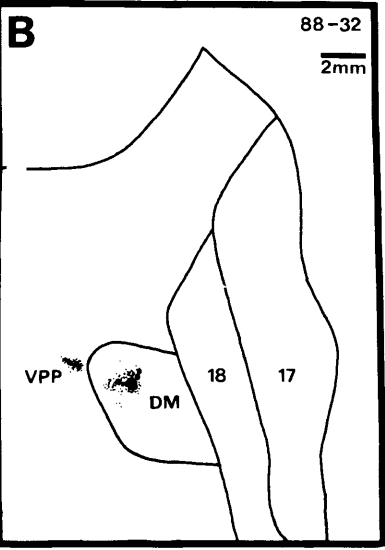
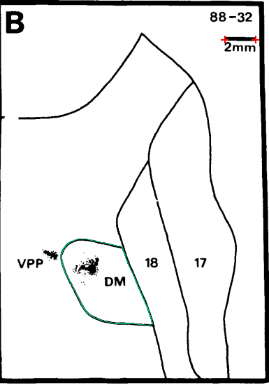
ImageJ ROIs · Calibrated TIFF
| Field | mm² | % neocortex | Status |
|---|
| DM | 21.775 | NA | provisional; anatomical review required |
| 17 | NA | NA | not_measurable |
| 18 | NA | NA | not_measurable |
| VPP | NA | NA | not_measurable |
fig12A — not reported
Provisional image digitization. Inspect field boundaries and short scale bar; no shrinkage correction.
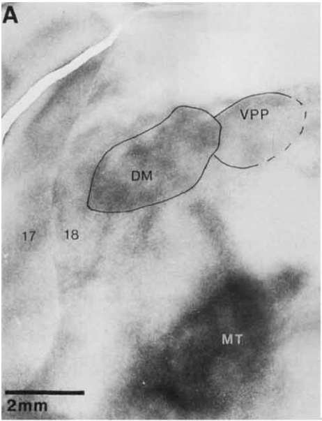
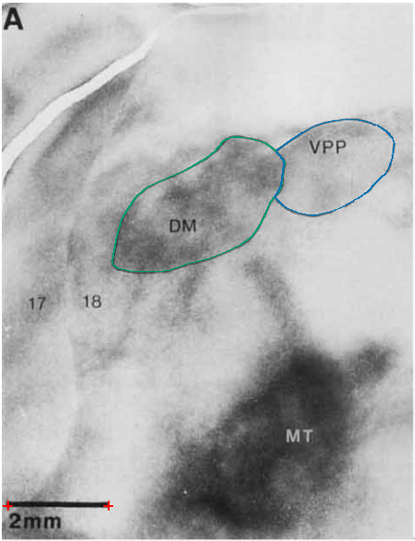
ImageJ ROIs · Calibrated TIFF
| Field | mm² | % neocortex | Status |
|---|
| DM | 5.756 | NA | provisional; anatomical review required |
| VPP | 3.312 | NA | provisional; anatomical review required |
| 17 | NA | NA | not_measurable |
| 18 | NA | NA | not_measurable |
| MT | NA | NA | not_measurable |
fig12B — not reported
Provisional image digitization. Inspect field boundaries and short scale bar; no shrinkage correction.
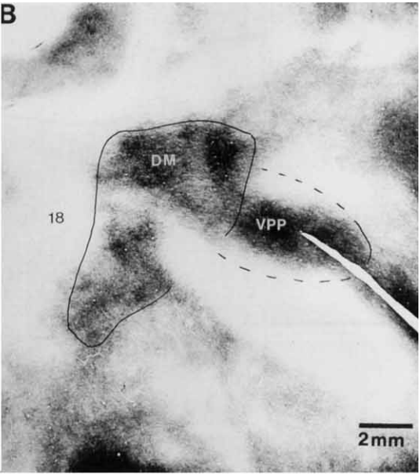
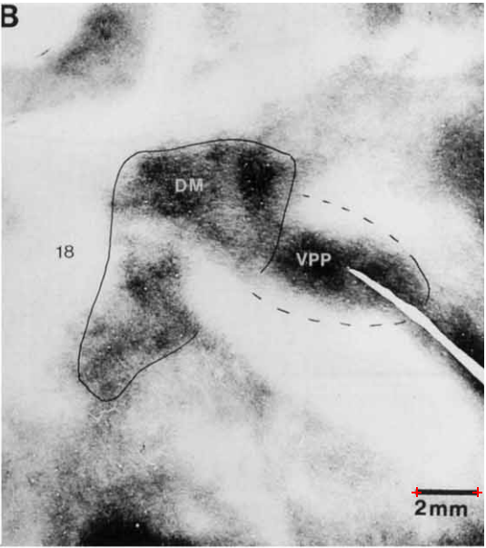
ImageJ ROIs · Calibrated TIFF
| Field | mm² | % neocortex | Status |
|---|
| DM | NA | NA | not_measurable |
| VPP | NA | NA | not_measurable |
fig12C — not reported
Provisional image digitization. Inspect field boundaries and short scale bar; no shrinkage correction.
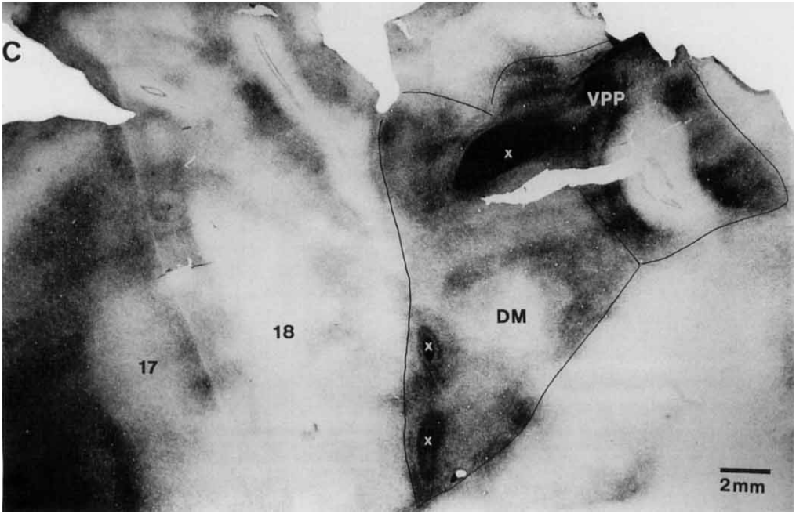
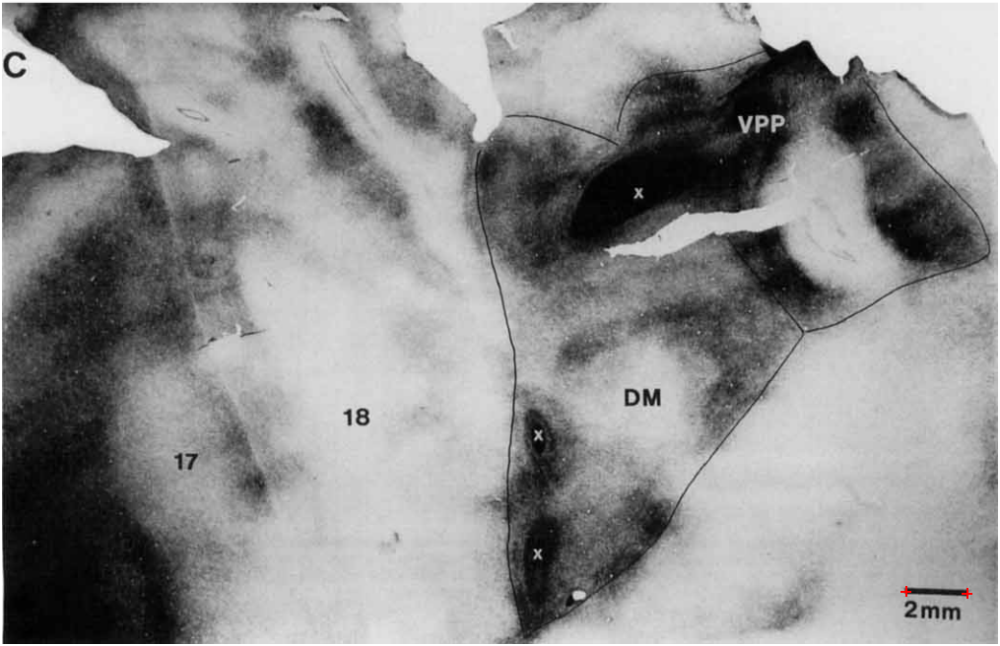
ImageJ ROIs · Calibrated TIFF
| Field | mm² | % neocortex | Status |
|---|
| DM | NA | NA | not_measurable |
| VPP | NA | NA | not_measurable |
fig13 — not reported
Provisional image digitization. Inspect field boundaries and short scale bar; no shrinkage correction.
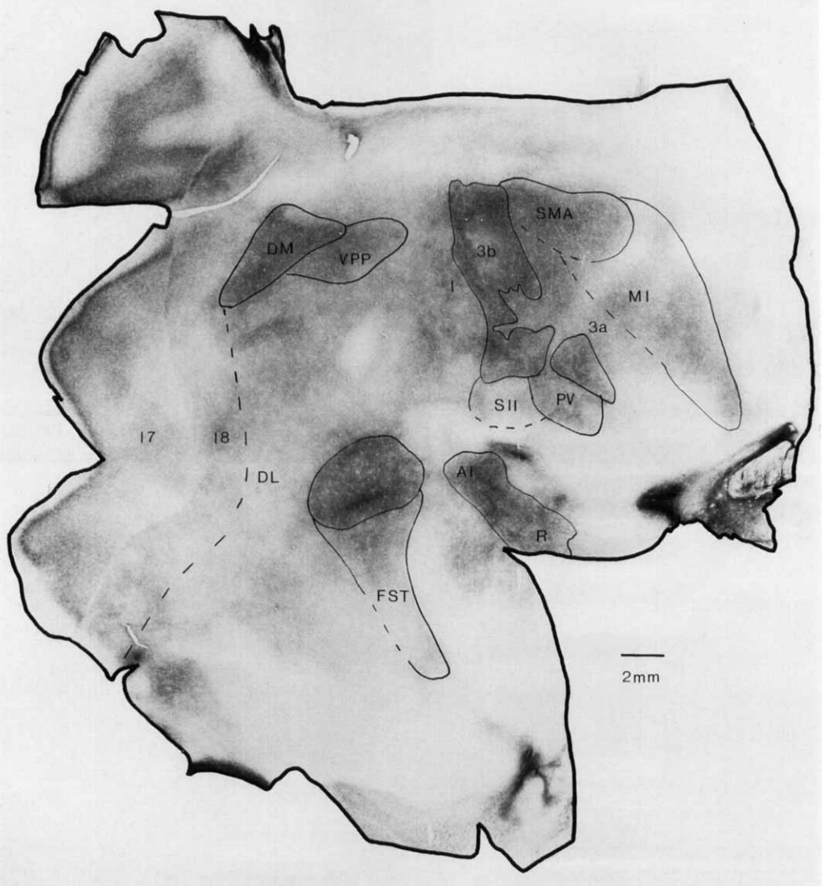
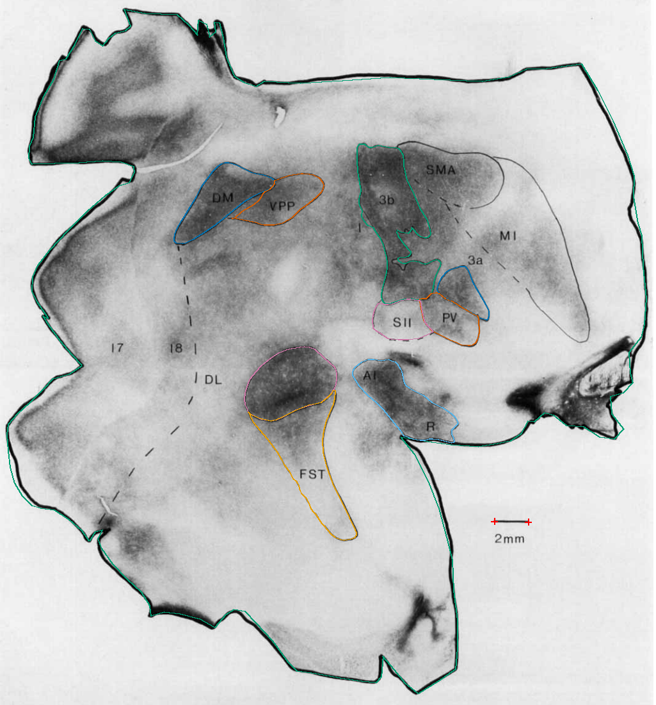
ImageJ ROIs · Calibrated TIFF
| Field | mm² | % neocortex | Status |
|---|
| Drawn tissue outline | 1011.760 | NA | provisional; anatomical review required |
| DM | 12.283 | NA | provisional; anatomical review required |
| VPP | 8.680 | NA | provisional; anatomical review required |
| MT | 16.587 | NA | provisional; anatomical review required |
| FST | 19.909 | NA | provisional; anatomical review required |
| AI + R | 14.703 | NA | provisional; anatomical review required |
| 3b | 24.607 | NA | provisional; anatomical review required |
| 3a | 5.095 | NA | provisional; anatomical review required |
| PV | 6.972 | NA | provisional; anatomical review required |
| SII | 6.404 | NA | provisional; anatomical review required |
| 17 | NA | NA | not_measurable |
| 18 | NA | NA | not_measurable |
| DL | NA | NA | not_measurable |
| 1 | NA | NA | not_measurable |
| MI | NA | NA | not_measurable |
| SMA | NA | NA | not_measurable |
fig14 — 88-16
Provisional image digitization. Inspect field boundaries and short scale bar; no shrinkage correction.
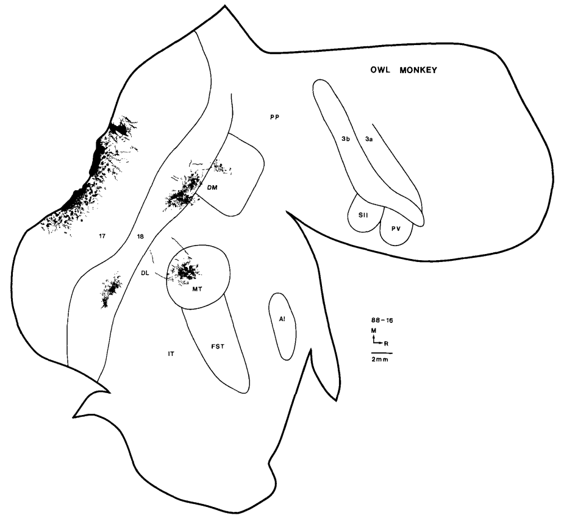
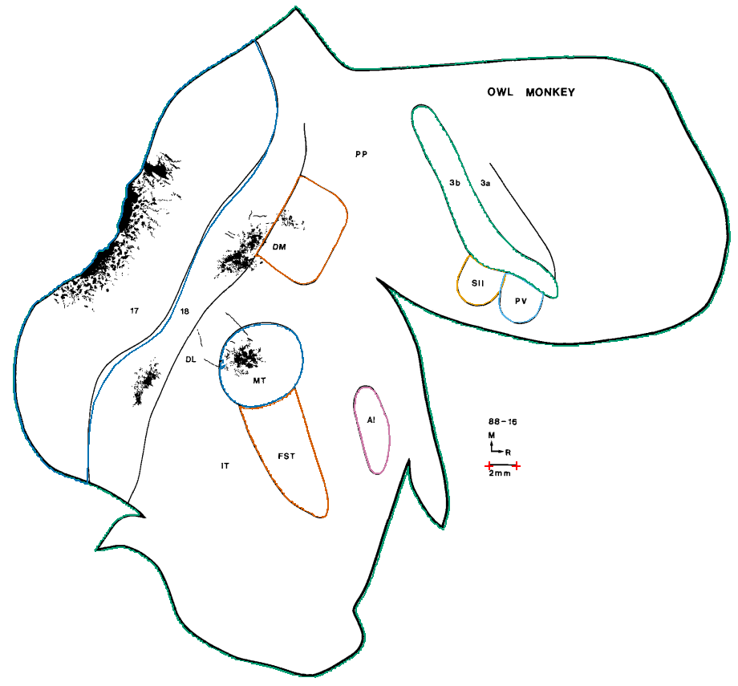
ImageJ ROIs · Calibrated TIFF
| Field | mm² | % neocortex | Status |
|---|
| Neocortex outline | 1418.235 | 100.000 | provisional; anatomical review required |
| MT | 29.496 | 2.080 | provisional; anatomical review required |
| FST | 30.804 | 2.172 | provisional; anatomical review required |
| AI | 10.893 | 0.768 | provisional; anatomical review required |
| SII | 8.568 | 0.604 | provisional; anatomical review required |
| PV | 8.383 | 0.591 | provisional; anatomical review required |
| 3b | 33.827 | 2.385 | provisional; anatomical review required |
| 17 | 226.224 | 15.951 | provisional; anatomical review required |
| DM | 31.196 | 2.200 | provisional; anatomical review required |
| 18 | NA | NA | not_measurable |
| DL | NA | NA | not_measurable |
| IT | NA | NA | not_measurable |
| PP | NA | NA | not_measurable |
| 3a | NA | NA | not_measurable |
fig15 — 89-78
Provisional image digitization. Inspect field boundaries and short scale bar; no shrinkage correction.
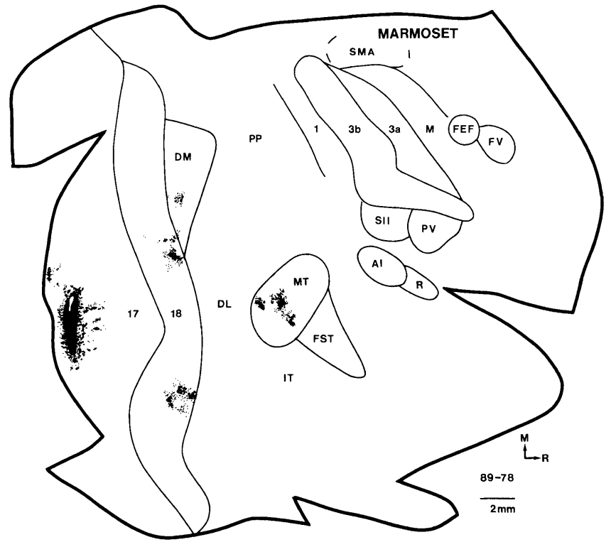
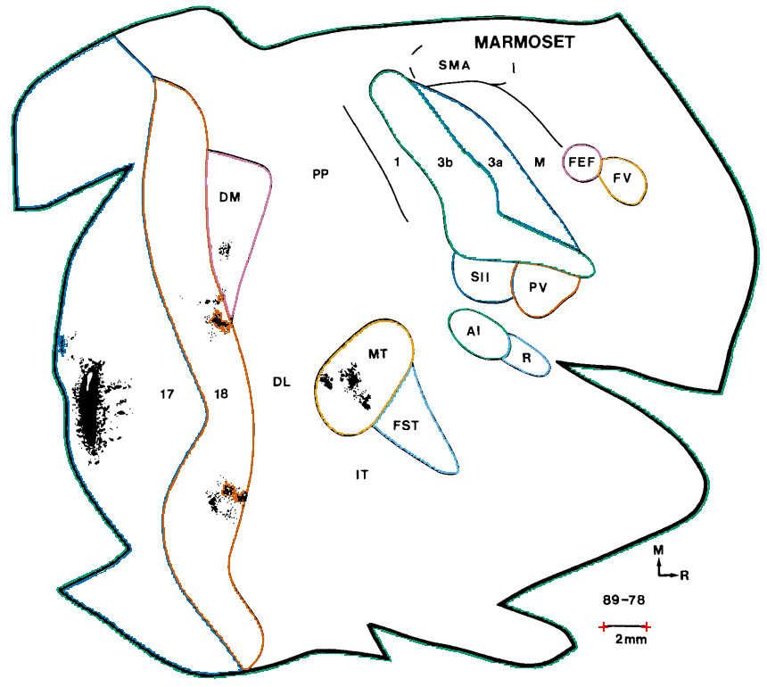
ImageJ ROIs · Calibrated TIFF
| Field | mm² | % neocortex | Status |
|---|
| Neocortex outline | 851.286 | 100.000 | provisional; anatomical review required |
| 17 | 130.955 | 15.383 | provisional; anatomical review required |
| 18 | 70.812 | 8.318 | provisional; anatomical review required |
| DM | 14.199 | 1.668 | provisional; anatomical review required |
| MT | 16.028 | 1.883 | provisional; anatomical review required |
| FST | 8.357 | 0.982 | provisional; anatomical review required |
| AI | 4.634 | 0.544 | provisional; anatomical review required |
| SII | 5.128 | 0.602 | provisional; anatomical review required |
| PV | 5.669 | 0.666 | provisional; anatomical review required |
| FEF | 2.447 | 0.287 | provisional; anatomical review required |
| FV | 3.532 | 0.415 | provisional; anatomical review required |
| R | 2.365 | 0.278 | provisional; anatomical review required |
| 3b | 27.463 | 3.226 | provisional; anatomical review required |
| 3a | 12.863 | 1.511 | provisional; anatomical review required |
| DL | NA | NA | not_measurable |
| IT | NA | NA | not_measurable |
| PP | NA | NA | not_measurable |
| 1 | NA | NA | not_measurable |
| M | NA | NA | not_measurable |
| SMA | NA | NA | not_measurable |
fig16 — 92-8
Provisional image digitization. Inspect field boundaries and short scale bar; no shrinkage correction.
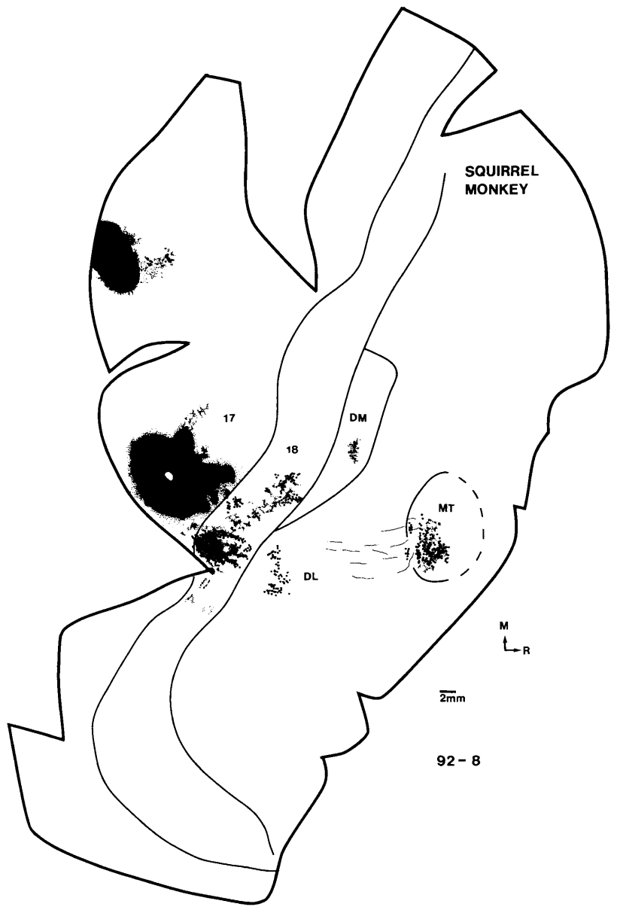
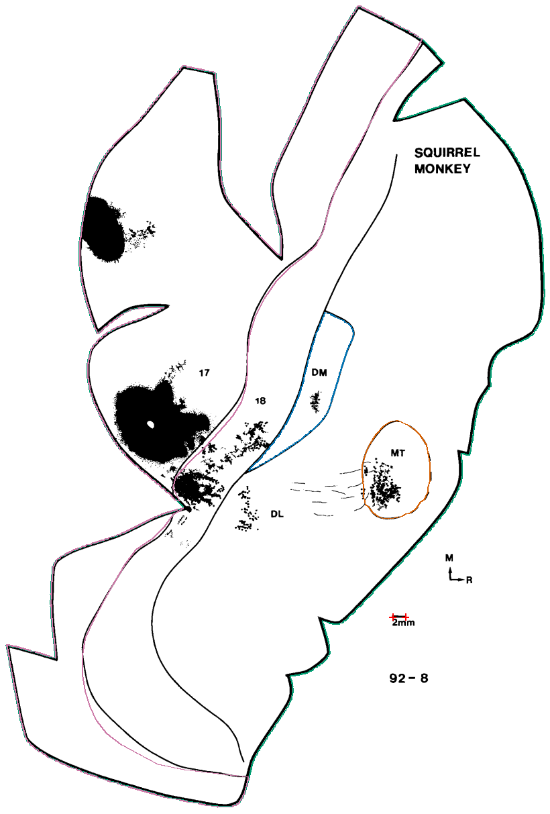
ImageJ ROIs · Calibrated TIFF
| Field | mm² | % neocortex | Status |
|---|
| Neocortex outline | 5989.430 | 100.000 | provisional; anatomical review required |
| DM | 112.131 | 1.872 | provisional; anatomical review required |
| MT | 129.781 | 2.167 | provisional; anatomical review required |
| 17 | 2201.796 | 36.761 | provisional; anatomical review required |
| 18 | NA | NA | not_measurable |
| DL | NA | NA | not_measurable |
fig17 — 89-11
Provisional image digitization. Inspect field boundaries and short scale bar; no shrinkage correction.
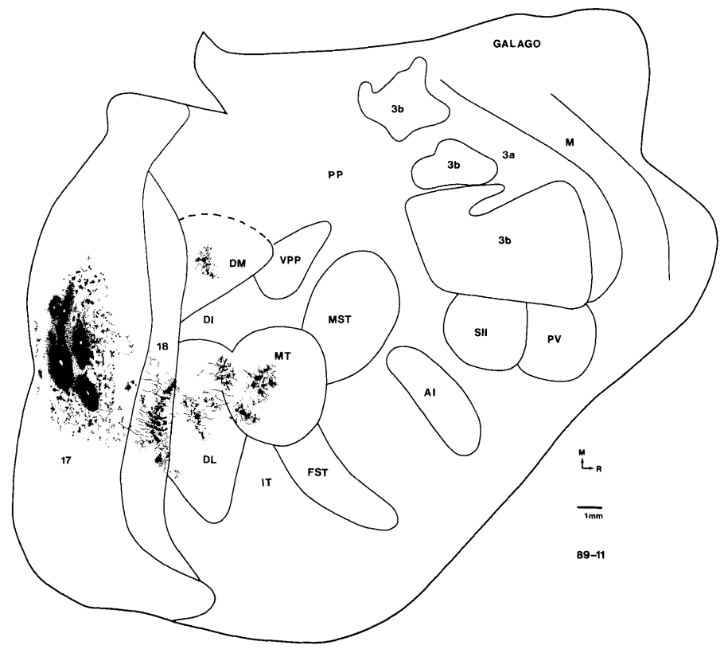
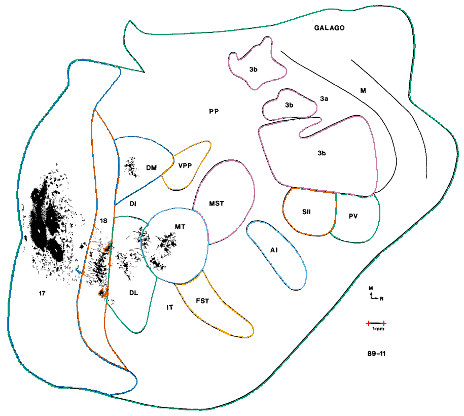
ImageJ ROIs · Calibrated TIFF
| Field | mm² | % neocortex | Status |
|---|
| Neocortex outline | 565.616 | 100.000 | provisional; anatomical review required |
| 17 | 95.665 | 16.913 | provisional; anatomical review required |
| 18 | 23.603 | 4.173 | provisional; anatomical review required |
| MST | 14.709 | 2.600 | provisional; anatomical review required |
| FST | 9.088 | 1.607 | provisional; anatomical review required |
| AI | 8.414 | 1.487 | provisional; anatomical review required |
| PV | 8.278 | 1.464 | provisional; anatomical review required |
| DM | 10.730 | 1.897 | provisional; anatomical review required |
| SII | 8.901 | 1.574 | provisional; anatomical review required |
| 3b | 42.894 | 7.584 | provisional; anatomical review required |
| VPP | 5.435 | 0.961 | provisional; anatomical review required |
| MT | 17.552 | 3.103 | provisional; anatomical review required |
| DL | 17.519 | 3.097 | provisional; anatomical review required |
| DI | NA | NA | not_measurable |
| IT | NA | NA | not_measurable |
| PP | NA | NA | not_measurable |
| 3a | NA | NA | not_measurable |
| M | NA | NA | not_measurable |
fig18 — 89-55
Provisional image digitization. Inspect field boundaries and short scale bar; no shrinkage correction.
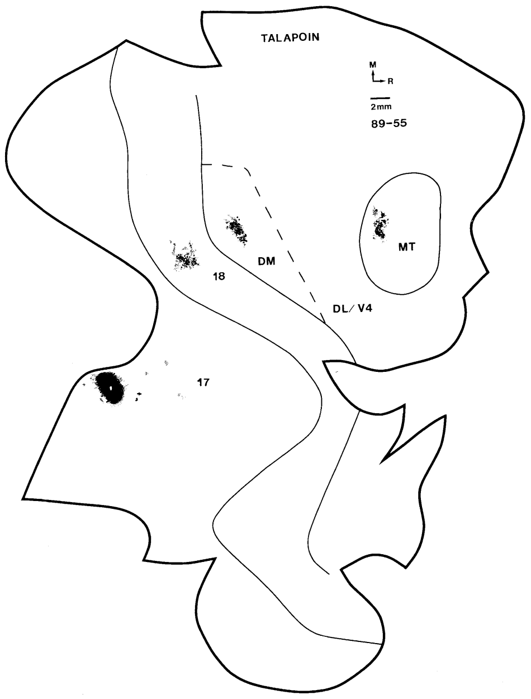
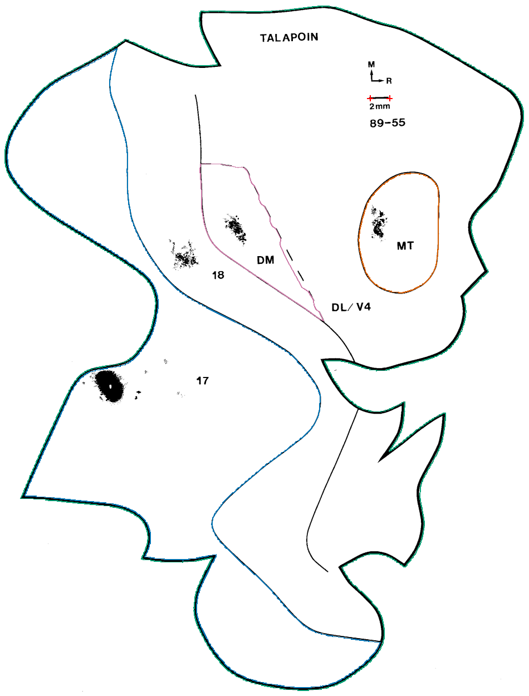
ImageJ ROIs · Calibrated TIFF
| Field | mm² | % neocortex | Status |
|---|
| Neocortex outline | 2317.489 | 100.000 | provisional; anatomical review required |
| 17 | 767.341 | 33.111 | provisional; anatomical review required |
| MT | 82.204 | 3.547 | provisional; anatomical review required |
| DM | 77.635 | 3.350 | provisional; anatomical review required |
| 18 | NA | NA | not_measurable |
| DL / V4 | NA | NA | not_measurable |
fig19 — 90-50
Provisional image digitization. Inspect field boundaries and short scale bar; no shrinkage correction.
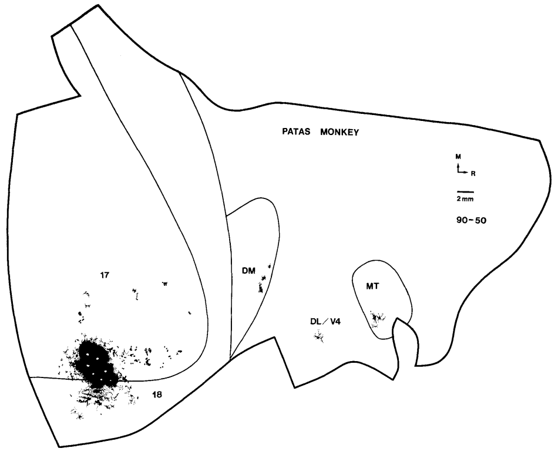
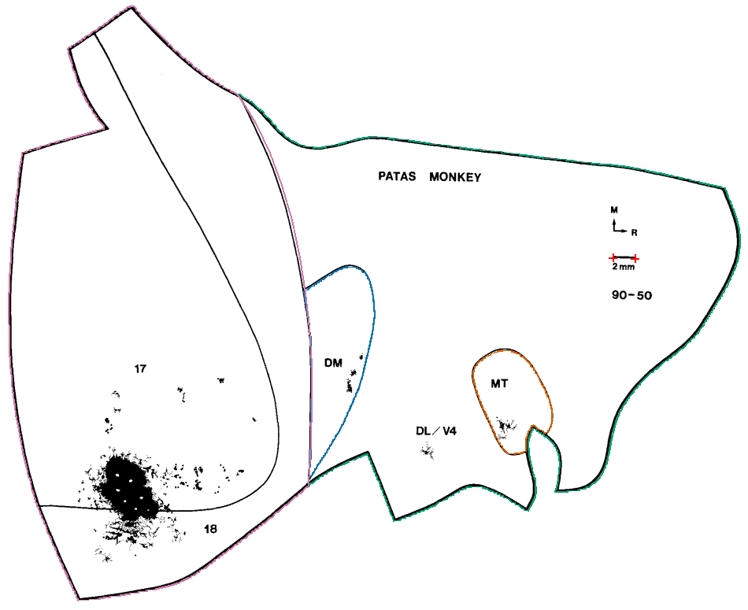
ImageJ ROIs · Calibrated TIFF
| Field | mm² | % neocortex | Status |
|---|
| Drawn tissue outline | 2148.261 | NA | provisional; anatomical review required |
| DM | 74.573 | NA | provisional; anatomical review required |
| MT | 44.335 | NA | provisional; anatomical review required |
| 17 + 18 | 1104.081 | NA | provisional; anatomical review required |
| DL / V4 | NA | NA | not_measurable |
| 17 | NA | NA | not_measurable |
| 18 | NA | NA | not_measurable |
fig20 — 92-7
Provisional image digitization. Inspect field boundaries and short scale bar; no shrinkage correction.
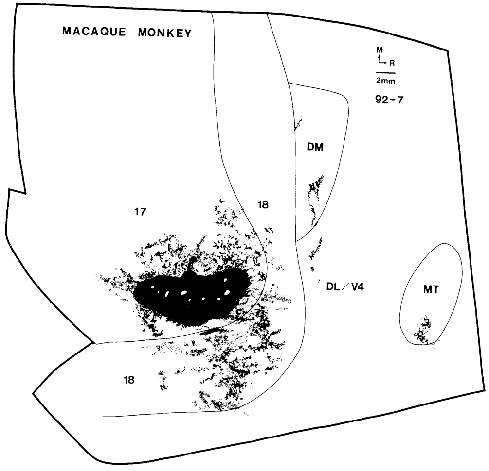
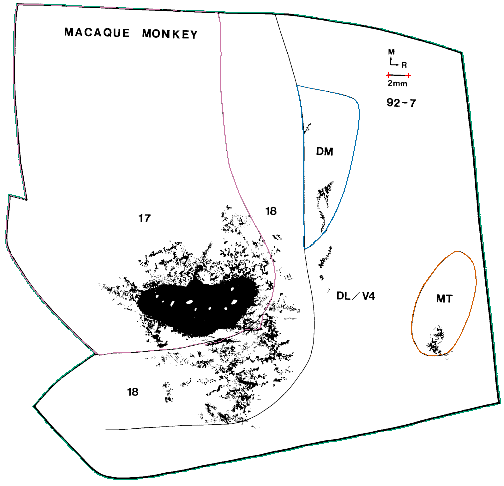
ImageJ ROIs · Calibrated TIFF
| Field | mm² | % neocortex | Status |
|---|
| Drawn tissue outline | 2038.005 | NA | provisional; anatomical review required |
| DM | 68.532 | NA | provisional; anatomical review required |
| MT | 49.041 | NA | provisional; anatomical review required |
| 17 | 772.692 | NA | provisional; anatomical review required |
| 18 | NA | NA | not_measurable |
| DL / V4 | NA | NA | not_measurable |